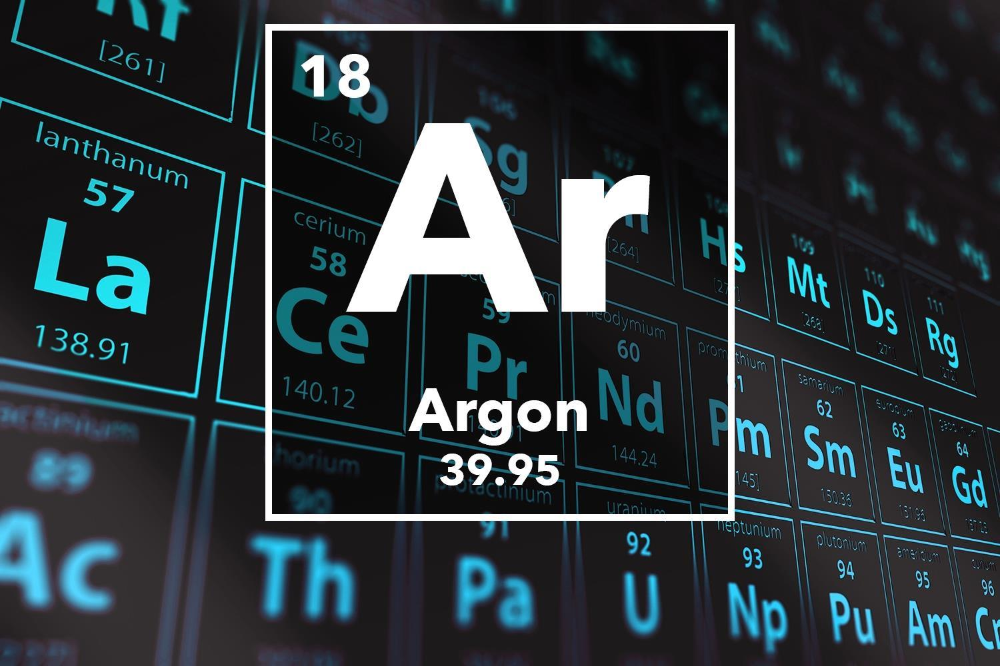

ARGON

Appearance of Argon:
colorless gas exhibiting a lilac/violet glow when placed in an electric field
Standard atomic weight:
Ar°(Ar)
[39.792, 39.963]
39.95±0.16 (abridged)
Argon in the periodic table:
Atomic number (Z): 18
Group group: 18 (noble gases)
Period period: 3
Block: p-block
Electron configuration: [Ne] 3s2 3p6
Electrons per shell: 2, 8, 8
Physical properties of Argon:
Phase at STP: gas
Melting point: 83.81 K (−189.34 °C, −308.81 °F)
Boiling point: 87.302 K (−185.848 °C, −302.526 °F)
Density (at STP): 1.784 g/L
when liquid (at b.p.): 1.3954 g/cm3
Triple point: 83.8058 K, 68.89 kPa
Critical point: 150.687 K, 4.863 MPa
Heat of fusion: 1.18 kJ/mol
Heat of vaporization: 6.53 kJ/mol
Molar heat capacity: 20.85 J/(mol·K)
Chemical Properties of Argon:
Oxidation states: 0
Electronegativity: Pauling scale: no data
Ionization energies:
1st: 1520.6 kJ/mol
2nd: 2665.8 kJ/mol
3rd: 3931 kJ/mol
Covalent radius: 106±10 pm
br>
Van der Waals radius: 188 pm
Other properties of Argon:
Natural occurrence: primordial
Crystal structure: face-centered cubic (fcc)Face-centered cubic crystal structure for argon
Speed of sound: 323 m/s (gas, at 27 °C)
Thermal conductivity: 17.72×10−3 W/(m⋅K)
Magnetic ordering: diamagnetic
Molar magnetic susceptibility : −19.6×10−6 cm3/mol
CAS Number: 7440-37-1
History:
Uses pf Argon:
Applications:
Argon has several desirable properties:
Argon is a chemically inert gas.
Argon is the cheapest alternative when nitrogen is not sufficiently inert.
Argon has low thermal conductivity.
Argon has electronic properties (ionization and/or the emission spectrum) desirable for some applications.
Other noble gases would be equally suitable for most of these applications, but argon is by far the cheapest.
Argon is inexpensive, since it occurs naturally in air and is readily obtained as a byproduct of cryogenic air separation in the production of liquid oxygen and liquid nitrogen:
the primary constituents of air are used on a large industrial scale. The other noble gases (except helium) are produced this way as well, but argon is the most plentiful by far.
The bulk of argon applications arise simply because it is inert and relatively cheap.
Industrial processes:
Argon is used in some high-temperature industrial processes where ordinarily non-reactive substances become reactive. For example,
an argon atmosphere is used in graphite electric furnaces to prevent the graphite from burning.
For some of these processes, the presence of nitrogen or oxygen gases might cause defects within the material.
Argon is used in some types of arc welding such as gas metal arc welding and gas tungsten arc welding, as well as in the processing of titanium and other reactive elements.
An argon atmosphere is also used for growing crystals of silicon and germanium.
Argon is used in the poultry industry to asphyxiate birds, either for mass culling following disease outbreaks,
or as a means of slaughter more humane than electric stunning. Argon is denser than air and displaces oxygen close to the ground during inert gas asphyxiation.
Its non-reactive nature makes it suitable in a food product, and since it replaces oxygen within the dead bird, argon also enhances shelf life.
Argon is sometimes used for extinguishing fires where valuable equipment may be damaged by water or foam.
Scientific research:
Liquid argon is used as the target for neutrino experiments and direct dark matter searches. The interaction between the hypothetical WIMPs and an argon nucleus produces scintillation light
that is detected by photomultiplier tubes. Two-phase detectors containing argon gas are used to detect the ionized electrons produced during the WIMP–nucleus scattering. As with most other liquefied noble gases,
argon has a high scintillation light yield (about 51 photons/keV), is transparent to its own scintillation light, and is relatively easy to purify. Compared to xenon, argon is cheaper and has a distinct scintillation time profile,
which allows the separation of electronic recoils from nuclear recoils. On the other hand, its intrinsic beta-ray background is larger due to 39Ar contamination, unless one uses argon from underground sources,
which has much less 39Ar contamination. Most of the argon in Earth's atmosphere was produced by electron capture of long-lived 40K (40K + e− → 40Ar + ν) present in natural potassium within Earth. The 39Ar
activity in the atmosphere is maintained by cosmogenic production through the knockout reaction 40Ar(n,2n)39.
Ar and similar reactions. The half-life of 39Ar is only 269 years. As a result, the underground Ar, shielded by rock and water, has much less 39Ar contamination.
Dark-matter detectors currently operating with liquid argon include DarkSide, WArP, ArDM, microCLEAN and DEAP. Neutrino experiments include ICARUS and MicroBooNE,
both of which use high-purity liquid argon in a time projection chamber for fine grained three-dimensional imaging of neutrino interactions.
At Linköping University, Sweden, the inert gas is being utilized in a vacuum chamber in which plasma is introduced to ionize metallic films.
This process results in a film usable for manufacturing computer processors. The new process would eliminate the need for chemical baths and use of expensive, dangerous and rare materials